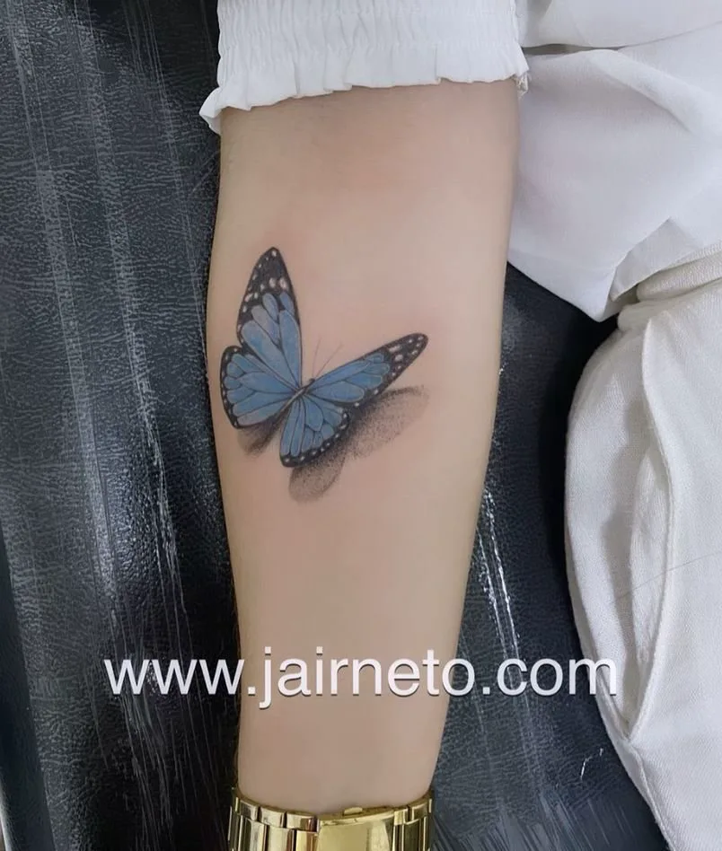
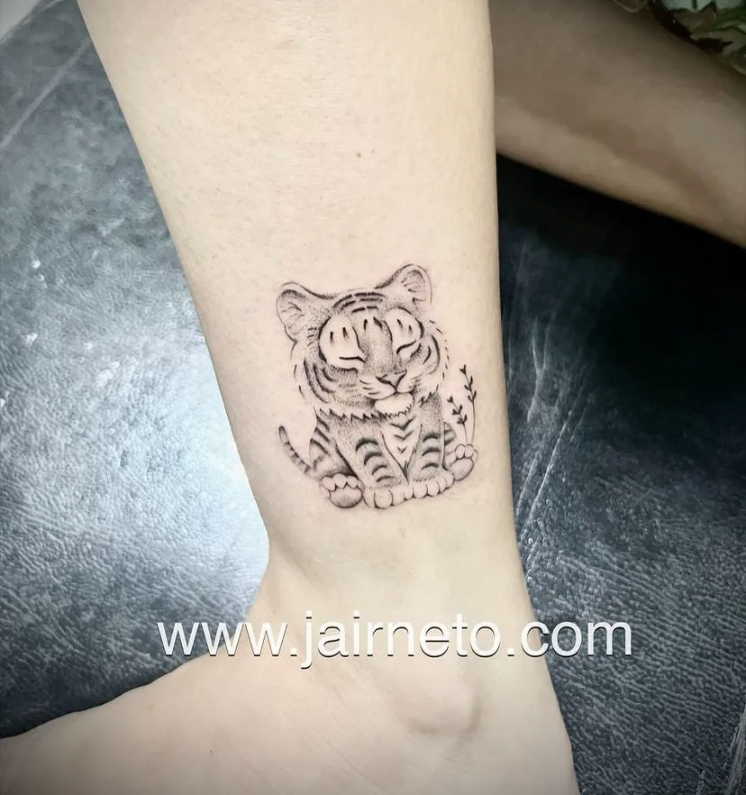
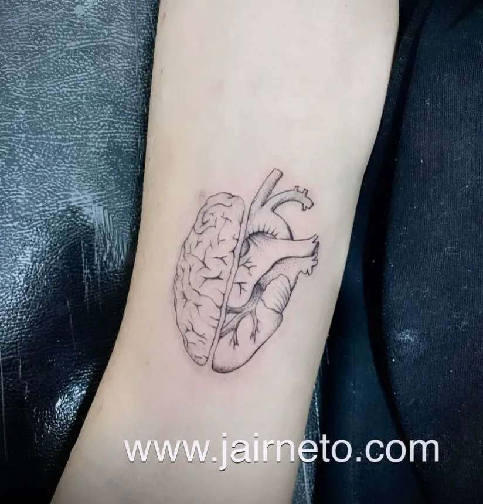

Escolha a direção
Indique a linguagem que mais se aproxima da sua ideia.
Fineline · delicadeza · expressão
Uma ideia pessoal merece clareza desde o primeiro contato. Explore a linguagem do traço e monte um briefing curto para conversar com Jair.

01 · direção criativa
Escolha uma direção visual para abrir o briefing. Ela não limita o desenho — só ajuda a tornar o primeiro contato mais objetivo.
02 · trabalhos publicados
Seleção de trabalhos publicados no portfólio oficial de Jair Neto. As imagens servem como referência de linguagem, não como promessa de repetição.



03 · primeiro contato
Indique a linguagem que mais se aproxima da sua ideia.
Conte local do corpo, dimensão aproximada e o que deseja representar.
A mensagem chega organizada para iniciar a conversa de orçamento.
Seu ponto de partida
Nenhum valor ou disponibilidade é presumido aqui. O objetivo é chegar ao contato com os dados essenciais já organizados.